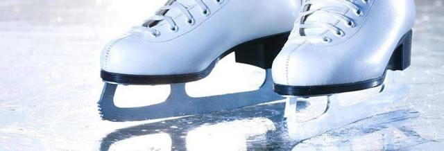
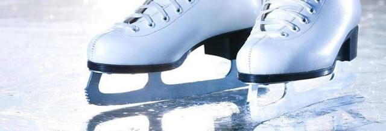

Ziemas sporta veidi ir forši, patīkami, jautri, visi aizraujoši utt. Ziemas sezonā var spēlēt diezgan daudz sporta veidu, no kuriem populāri ir slidošana, slēpošana un braukšana ar ragaviņām. Daudzi cilvēki no visas pasaules izbauda ziemas sporta veidus un vēlas tādā vai citādā veidā piedalīties aktivitātēs. Vienkāršāk sakot, ziemas sporta veidi ir dažādi sporta pasākumi vai aktivitātes, kas tiek veiktas, īpaši ziemas sezonā. Tas attiecas uz sporta veidiem, kas tiek veikti uz ledainas/sniegainas virsmas – aukstā temperatūrā. Ir daudz veidu ziemas sporta veidu, un katram ir arī dažādas šķirnes. Lai gan ziemas sporta veidi ir domāti, lai nodarbotos ziemas sezonās, dažkārt, cenšoties izklaidēt šādu sporta veidu cienītājus visa gada garumā, daži ziemas sporta veidu organizatori ziemas spēļu spēlēšanai ierīko mākslīgi apledojušu un sniegotu vidi. Kad vēl nav ziemas sezona. Divas galvenās ziemas sporta veidu nodaļas ir individuālie sporta veidi un komandu sporta veidi. Daudzi cilvēki ziemas sporta veidos nodarbojas tikai izklaidei un atpūtai, bet dažiem tā ir profesija un iztikas avots. Ļoti daudzi sportisti arī izmanto dažādus sporta uztura bagātinātājus, kas ir ļoti labi papildinājumi locītavām, ko var iegūt no mrbiceps.lv. Lielākā daļa ziemas spēļu ir saistītas ar trīs sporta veidiem, proti, slēpošanu, slidošanu un ragaviņām. Tas nozīmē, ka visizplatītākie individuālie ziemas sporta veidi ir distanču slēpošana, snovbords, kalnu slēpošana, ātrslidošana, tramplīnlēkšana, kamaniņu sports, daiļslidošana, skeletons, slēpošanas orientēšanās, bobslejs un sniega motocikli.
 
